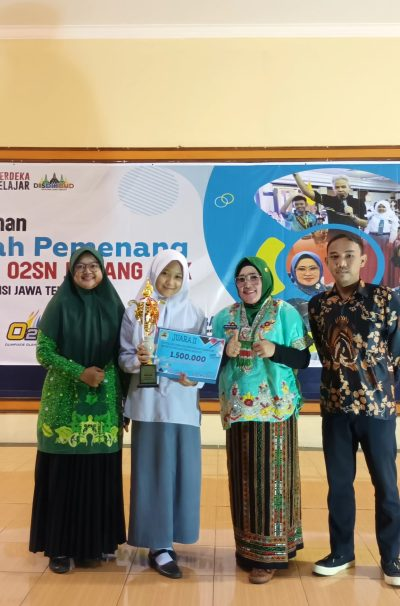
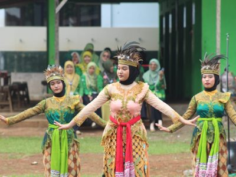

Tempat untuk Belajar dan Tumbuh
SMK Ma'arif NU Kajen membentuk hardskill dan softskill unggul. Dapatkan kompetensi teknis dan kepribadian untuk sukses di dunia pekerjaan melalui pendidikan kami.
SMK Ma’arif NU Kajen memberikan banyak pengalaman pembelajaran bermakna baik di dalam kelas maupun di luar kelas melalui berbagai kegiatan ekstrakurikuler sesuai bakat dan minat peserta didik. Kegiatan ekstrakurikuler selain melatih kemandirian dalam berorganisasi juga untuk membentuk mental dan karakter peserta didik untuk bekal kehidupan setelah lulus.